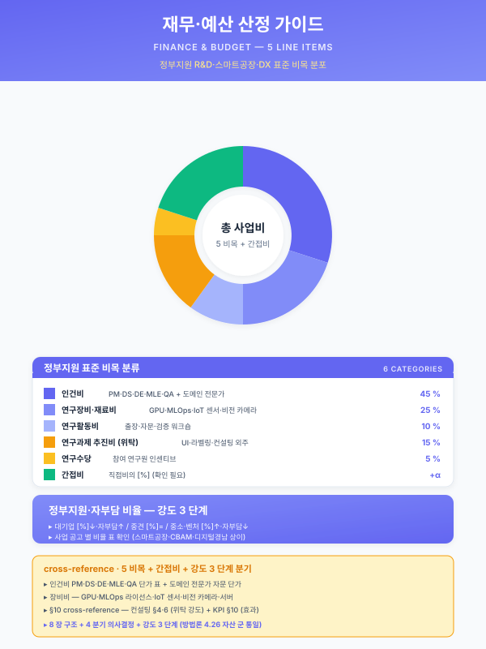

재무·예산 산정 가이드¤
📖 약 23 분 읽기

ℹ️ 페이지 정보 (워크스페이스 메타)
통합 파일럿 자체평가 갭 8 (사업비 산정 표준 자산 부재) 해소를 위한 신규 자산. 정부지원 제조 AI 사업의 사업비 산정 표준을 제공한다 — 항목 분류·시나리오별 단위 비용·시너지 보정·6 패키지 예산 모델·사업계획서 §0 과 §5.5·§8 별첨 양식. 본 가이드는 other/synergy-roi.md 와 짝을 이루어, 시너지 모델이 효과(가치) 측면을 산정하면 본 가이드가 비용 측면을 산정하여 종합 ROI 산식의 분모·분자를 모두 채우는 구조이다.
플레이스홀더 범례 — [고객사] 고객사명, [공정] 대상 공정명, [수치] 수치, [기간] 기간, [%] 비율, [N] 시나리오 수.
본 가이드는 프레임만 제공한다. 단위 비용·정부지원 비율·외주 단가·간접비율은 사업·고객사·지원사업 회차에 따라 변동하므로 모두 (확인 필요) 표기 또는 플레이스홀더이며, 실 산정 시 사용자가 최신 지원사업 가이드라인·고객사 인건비 단가·시장 견적으로 채워 넣는다.
1. 본 가이드의 위상과 사용 시점¤
본 가이드는 사업계획서 작성 시 다음 세 지점에서 직접 호출된다.
첫째, 사업계획서 §0 과제 요약 표의 총 사업비·정부지원·자부담 행을 본 가이드 §3 의 6 패키지별 표준 예산 모델로 채운다. 둘째, 사업계획서 §5.5 마일스톤 또는 별도 추진 일정 섹션에서 분기별·단계별 집행 예산 을 본 가이드 §4.2 의 단계별 양식으로 제시한다. 셋째, 사업계획서 §8 별첨 또는 비목별 명세서에서 항목별 상세 산정 근거 를 본 가이드 §4.3 의 별첨 양식으로 작성한다.
본 가이드는 프레임을 제공하며, 구체 [수치] 는 사업·고객사·지원사업 회차에 따라 검증·교체되어야 한다. 본 문서의 표·산식은 검증 이전의 추정 기본값 으로 작성되어 있으며, 실제 사업계획서에 인용할 때에는 (i) 지원사업 가이드라인의 정부지원·자부담·간접비 비율, (ii) 고객사 인건비 단가, (iii) 인프라·외주 시장 견적의 3 종 자료에 기반한 재산정을 권장한다.
2. 사업비 항목 분류 (정부지원 표준 비목)¤
2.1 직접비 5 비목¤
정부지원 R&D·스마트공장·DX 사업의 표준 비목 분류를 따른다. 본 분류는 중기부·산업부·과기부 산하 사업 다수에 공통 적용되며, 회차별 가이드라인의 세부 정의·한도는 (확인 필요).
| 비목 | 정의 | 본 사업 적용 예시 | 일반적 비중 (직접비 대비) |
|---|---|---|---|
| 인건비 | 참여 연구원·개발자·도메인 전문가의 월급·퇴직급여 충당금·4 대 보험 | PM·DS·DE·MLE·QA·도메인 전문가 [수치] 인 × [기간] | [%] ~ [%] (확인 필요) |
| 연구장비·재료비 | GPU 서버·엣지 디바이스·소프트웨어 라이선스·IoT 센서·HW 개발도구 | GPU 서버, MLOps 라이선스, 진동·온도 센서, 비전 카메라 | [%] ~ [%] (확인 필요) |
| 연구활동비 | 출장·회의·국내외 학회·세미나·외부 자문 (단순 자문, 도메인 전문가) | 현장 출장, 도메인 전문가 자문, 검증 워크숍 | [%] ~ [%] (확인 필요) |
| 연구과제 추진비 | 외부 기관·전문업체에 위탁 (소프트웨어 개발 외주·라벨링·통계 분석·문서화) | UI 개발 외주, 비전 라벨링 외주, 도메인 컨설팅 | [%] ~ [%] (확인 필요) |
| 연구수당 | 참여 연구원의 인센티브 (인건비와 별도, 사업 종료 후 일괄 지급 가능) | 핵심 참여 연구원 인센티브 | [%] 이하 (확인 필요) |
2.2 간접비¤
직접비의 일정 비율을 간접비로 추가 산정한다. 비율은 지원사업·기관 유형(영리·비영리·대학·연구소) 에 따라 차등하며, 일반적으로 직접비의 [%] ~ [%] 범위에서 적용된다 (확인 필요). 본 가이드에서는 보수 추정으로 [%] 를 기본값으로 가정한다.
2.3 정부지원·자부담 비율¤
지원사업·기업 규모(대기업·중견·중소·벤처) 에 따라 정부지원 비율이 차등 적용된다. 본 가이드에서 가정하는 일반적 범위는 다음과 같으며, 모든 [수치] 는 (확인 필요) — 회차별 가이드라인을 우선한다.
| 기업 규모 | 정부지원 비율 (추정) | 자부담 비율 (추정) | 자부담 중 현금·현물 분리 |
|---|---|---|---|
| 대기업 | [%] (낮음) | [%] (높음) | 현금 [%] / 현물 [%] (확인 필요) |
| 중견기업 | [%] (중간) | [%] (중간) | 현금 [%] / 현물 [%] (확인 필요) |
| 중소·벤처 | [%] (높음) | [%] (낮음) | 현금 [%] / 현물 [%] (확인 필요) |
지원사업별 정부지원·자부담 비율 차등은 다음과 같다 (모두 확인 필요) — 제조AI특화 스마트공장 [%] / 디지털 기업 in 경남 [%] / 대중소상생 (LG·삼성·포스코 AI 트랙) [%] / 전사적 DX 촉진 R&D [%] / 클라우드 종합솔루션 [%] / 뿌리산업 첨단화 [%] / 중대재해·산업안전 [%]. 자세한 회차별 비율은 other/support-programs.md 와 각 사업 가이드라인 원문을 참조한다.
2.4 비목별 한도·증빙 요건 (공통)¤
- 인건비 — 참여율 100 % 환산 인월 기준. 외부 기관 소속 연구원의 경우 참여율 한도(보통 30~50 %, 확인 필요) 가 별도 적용된다.
- 연구장비·재료비 — 단가 기준 일정액 이상은 자산 등록 의무. 사업 종료 후 자산 귀속처(주관기관·도입기업) 가 회차별로 차등.
- 연구활동비 — 출장 1 건당 한도·해외 출장 사전승인 등 절차 요건이 있으며 (확인 필요), 영수증·복명서 증빙 필수.
- 연구과제 추진비 (외주) — 외주 비중이 직접비의 [%] 를 초과할 경우 사전승인 또는 가이드라인상 제한이 있을 수 있다 (확인 필요).
- 연구수당 — 인건비의 일정 비율 이내로 한도 (확인 필요).
본 §2.4 한도·증빙 요건은 일반적 정부지원 사업의 공통 요건을 추정 정리한 것이며, 사업 회차·주관기관별 가이드라인이 우선한다.
3. 시나리오별 표준 단위 비용 (보수 추정 프레임)¤
3.1 단일 시나리오 도입 비용 산식¤
본 가이드는 단일 시나리오의 도입 비용을 다음 4 항목으로 분해하여 산정한다. 본 분해는 §2.1 의 정부지원 표준 비목과 매핑되며, 시나리오 카탈로그의 시나리오 카드 1 종에 대해 1 회 적용한다.
단일 시나리오 도입 비용
= 인건비 ([수치] 인월 × 인월 단가)
+ 재료비 ([수치] 만 원 — 센서·라이선스·HW)
+ 외주 ([수치] 만 원 — UI·라벨링·도메인 자문)
+ 인프라 ([수치] 만 원 — GPU·MLOps·클라우드)
여기서 인월 단가는 직군(PM·DS·MLE·DE·QA·도메인 전문가) 에 따라 [수치] 만 원 / 인월 ~ [수치] 만 원 / 인월 범위로 변동한다 (확인 필요). 본 가이드는 일반적 중견기업 SI·AI 프로젝트 평균 단가를 기본값으로 가정하나, 고객사·외주처별 단가 협상 결과로 교체되어야 한다.
3.2 시나리오 유형별 표준 인월·비용 (보수 추정)¤
scenario/catalog.md 의 시나리오 분류와 정합하도록, 본 가이드는 시나리오 유형 6 종으로 표준 인월·비용을 분류한다. 모든 [수치] 는 추정 기본값이며, 산업·기업 규모·기존 인프라 성숙도에 따라 ±[%] 변동 가능 (확인 필요).
| 시나리오 유형 | 카탈로그 매핑 예 | 평균 인월 | 인프라 부담 | 외주 비중 | 단일 도입 비용 (만 원, 추정) |
|---|---|---|---|---|---|
| 시계열 예측·이상탐지 | SCN-STL-05·09, SCN-RUB-02 | [수치] | 中 (PLC 게이트웨이·시계열 DB) | [%] | [수치] (확인 필요) |
| 추천·검색 | SCN-STL-04, SCN-LLM-04 | [수치] | 低 (기존 MES 활용 가능) | [%] | [수치] (확인 필요) |
| 비전 검사 | SCN-STL-10·11, SCN-RUB-05 | [수치] | 高 (라벨링·카메라·조명 환경) | [%] (라벨링) | [수치] (확인 필요) |
| 최적화·제어 | SCN-STL-06, SCN-RUB-01 | [수치] | 高 (시뮬레이터·실험 설계) | [%] | [수치] (확인 필요) |
| LLM·RAG | SCN-LLM-01·02·03·04, SCN-STL-07 | [수치] | 中 (벡터스토어·임베딩) | [%] (문서 정제) | [수치] (확인 필요) |
| MLOps 인프라 | SCN-MLO-01·02·03 | [수치] | 高 (모델 레지스트리·피쳐 스토어 풀 도입) | [%] | [수치] (확인 필요) |
유형별 비용 특성 해설
- 시계열·이상탐지 — 데이터 인프라가 이미 ICS·MES Lv.2 수준으로 갖춰진 경우 인프라 부담이 낮아진다. 패키지 2 (중견 스테인리스 냉연) 의 SCN-STL-05·09 가 대표 예시.
- 추천·검색 — 기존 시스템 데이터 재활용도가 높아 단일 시나리오 비용이 가장 낮은 군에 속한다.
- 비전 검사 — 라벨링 외주 비중이 [%] 를 초과하는 사례가 일반적이며, 카메라·조명·차폐 등 현장 설치 비용이 인프라 비중을 끌어올린다.
- 최적화·제어 — 시뮬레이터 구축 또는 실험 설계(DOE) 가 필요한 경우 인프라 부담이 가장 높다.
- LLM·RAG — 외주 비중이 문서 정제·청킹 가공에 집중되며, 모델 사용료(API 호출·온프레미스 추론) 가 운영 단계에 추가된다.
- MLOps 인프라 — Track 2 풀 도입 시 1 회성 인프라 투자가 큰 군에 속하나, 후속 시나리오 한계 비용을 급격히 낮추는 시너지 자산이다.
3.3 시너지 보정 (단일 합 vs 결합 도입 비용)¤
복수 시나리오를 결합 도입할 때, 데이터 인프라·MLOps 플랫폼·HITL UI 의 공유로 단일 시나리오 비용의 단순 합 대비 비용 절감이 발생한다. 본 절감은 other/synergy-roi.md §2.1 (데이터 시너지) 와 §2.2 (인프라 시너지) 의 비용 측면 해석에 해당한다.
여기서 β 의 분류·기본값은 다음과 같다.
| 시너지 분류 | 산출 근거 | 보수 케이스 | 낙관 케이스 |
|---|---|---|---|
| β_data (데이터 인프라 공유) | PLC·MES·CMMS 수집·정제·표준화 1 회 부담 | [%] | [%] |
| β_infra (MLOps 플랫폼 공유) | 모델 레지스트리·피쳐 스토어·모니터링 통합 | [%] | [%] |
| β_hitl_setup (HITL UI 통합 1 회 구축) | 단일 태블릿·검수 화면 통합 | [%] | [%] |
| β_synergy 합산 (가산식) | [%] | [%] |
본 표는 보수 가정으로 결합 도입 시 단순 합 대비 [%] 의 비용 절감, 낙관 가정으로 [%] 의 비용 절감을 추정한다 (모두 확인 필요). β 는 합산식이 아니라 (1 - β) 의 곱셈식으로도 해석 가능하며, 본 가이드는 단순화를 위해 가산식을 채택한다.
시너지가 비용에 발현하는 시점 주의 — 본 §3.3 의 비용 시너지는 도입 단계에서 100 % 발현되지 않으며, 일반적으로 도입 단계 [%] / 운영 단계 [%] 분포로 발현된다. 사업계획서에 인용할 때에는 도입 단계 시너지만을 사업비 절감으로 반영하고, 운영 단계 시너지는 운영비(사업 종료 후) 절감으로 별도 표기할 것을 권장한다.
4. 6 패키지 예산 모델¤
4.1 패키지 2 (중견 스테인리스 냉연) — 18 개월 표준 예시 표¤
본 §4.1 은 pkg/pkg2-cold-rolled.md §0 과제 요약의 "총 사업비 [수치] 억 원" 행을 채우는 표준 산정표이다. 6 시나리오 (SCN-STL-04·05·06·09 + SCN-MLO-03 + SCN-LLM-02) 통합 도입을 가정한다.
| 비목 | 산정 근거 | 단가·수량 | 금액 (만 원, 추정) |
|---|---|---|---|
| 인건비 — PM | [기간] 18 개월 × 1 인 × [%] 참여율 | [수치] 만 / 인월 | [수치] (확인 필요) |
| 인건비 — DS·MLE 핵심 | [기간] × [수치] 인 | [수치] 만 / 인월 | [수치] (확인 필요) |
| 인건비 — DE·QA·도메인 전문가 | [기간] × [수치] 인 | [수치] 만 / 인월 | [수치] (확인 필요) |
| 재료비 — IoT 증설 (SCN-STL-09) | 진동·온도 센서 [수치] 식 | [수치] 만 / 식 | [수치] (확인 필요) |
| 재료비 — MLOps·시계열 DB 라이선스 | 연 [수치] 식 × 2 개년 | (확인 필요) | [수치] (확인 필요) |
| 재료비 — RAG 임베딩·벡터스토어 | (SCN-LLM-02) | (확인 필요) | [수치] (확인 필요) |
| 연구장비 — GPU 서버·엣지 박스 | 학습용 [수치] 식 + 엣지 [수치] 식 | (확인 필요) | [수치] (확인 필요) |
| 연구활동비 — 출장·검증 워크숍 | 월 [수치] 회 × 18 개월 평균 | (확인 필요) | [수치] (확인 필요) |
| 외주 (연구과제 추진비) — UI 개발 | HITL 태블릿·대시보드 | (확인 필요) | [수치] (확인 필요) |
| 외주 — 도메인 자문 | 냉간압연·소둔 자문 [수치] 인일 | (확인 필요) | [수치] (확인 필요) |
| 외주 — 라벨링·문서 정제 | RAG 문서 정제·SOP OCR | (확인 필요) | [수치] (확인 필요) |
| 연구수당 | 핵심 참여 연구원 인센티브 | (확인 필요) | [수치] (확인 필요) |
| 직접비 소계 | [수치] (확인 필요) | ||
| 간접비 ([%] 적용) | 직접비 × [%] | [수치] (확인 필요) | |
| 총 사업비 | 직접비 + 간접비 | [수치] 억 원 (확인 필요) | |
| 정부지원 ([%]) | [수치] (확인 필요) | ||
| 자부담 ([%], 현금 [%] / 현물 [%]) | [수치] (확인 필요) |
시너지 보정 적용 여부 주석 — 본 §4.1 의 [수치] 는 §3.3 시너지 보정 (보수 [%]) 을 이미 적용한 결합 도입 비용이다. 단일 시나리오 6 종을 분리 발주할 경우 본 표의 [%] 증가가 추정되며, 본 사업이 패키지 결합 도입 형태로 추진되어야 하는 비용 측면 근거이다.
4.2 6 패키지 사업비 비교 표 (보수 추정)¤
scenario/catalog.md 부록 B 의 6 패키지 각각에 대해 본 §3 산식 프레임을 적용한 추정값이다. 각 [수치] 는 일반적 제조 AI 도입 사례 추정 범위이며, 구체 적용 시 검증을 요한다 (모두 확인 필요).
| 패키지 | 시나리오 수 | 표준 사업기간 | 18 개월 표준 사업비 (보수) | 9 개월 압축 시 사업비 [%] 변동 | 정부지원 비율 추정 |
|---|---|---|---|---|---|
| 1. 대기업 전사 AI 공장 | 8+ | 36 개월 | [수치] 억 원 (가장 큼, 확인 필요) | 압축 비권장 | [%] (대기업, 낮음) |
| 2. 중견 스테인리스 냉연 ★ | 6 | 18 개월 | [수치] 억 원 (확인 필요) | [%] | [%] (중견, 중간) |
| 3. 특수강관 중견 (암묵지) | 4 | 9 개월 | [수치] 억 원 (확인 필요) | (이미 9 개월 표준) | [%] (중견, 중간) |
| 4. 고무 양산 중견 | 5 | 12 개월 | [수치] 억 원 (확인 필요) | [%] | [%] (대중소상생, 높음) |
| 5. 정밀가공 중소 SaaS | 6 | 6 개월 | [수치] 천만 원 (가장 작음, 확인 필요) | (이미 6 개월 표준) | [%] (중소, 높음) |
| 6. 유틸리티·ESG 특화 | 5 | 12 개월 | [수치] 천만 원 ~ [수치] 억 원 (확인 필요) | [%] | [%] (안전·환경 사업, 변동) |
본 표의 9 개월 압축 시 비용 변동은 guide/duration-compress.md 산출물의 압축 가이드와 정합하며, 압축 시 외주 비중 증가·인건비 집중 투입으로 일반적으로 [%] ~ [%] 의 사업비 증가가 예상된다 (확인 필요, 본 가이드는 G4 산출물의 압축 모델을 가정만 인용).
4.3 패키지별 비목 비중 패턴 (보수 추정)¤
각 패키지의 비목 비중은 시나리오 유형 분포에 따라 차등하다. 본 §4.3 은 각 패키지의 직접비 대비 비목 비중을 추정 정리한 것이다 (모두 확인 필요).
| 패키지 | 인건비 [%] | 재료비 [%] | 연구장비 [%] | 외주 [%] | 비고 |
|---|---|---|---|---|---|
| 1. 대기업 전사 | [%] (높음) | [%] | [%] (MLOps·인프라 풀 도입) | [%] | 인프라 비중 큼 |
| 2. 중견 냉연 ★ | [%] (중간) | [%] (센서 증설) | [%] | [%] | 균형형 |
| 3. 특수강관 (암묵지) | [%] (높음, 도메인 전문가 비중) | [%] (낮음) | [%] (낮음) | [%] (RAG 외주) | LLM·RAG 특성 |
| 4. 고무 양산 | [%] | [%] (비전 카메라) | [%] | [%] (높음, 라벨링) | 비전 라벨링 비중 큼 |
| 5. 정밀가공 SaaS | [%] (낮음, 클라우드 활용) | [%] | [%] (낮음) | [%] | SaaS 운영비 별도 |
| 6. ESG 특화 | [%] | [%] (FEMS·CEMS 센서) | [%] | [%] (규제 자문) | 규제 자문 비중 큼 |
본 표는 사업계획서 §8 별첨의 비목별 명세서 작성 시, 각 패키지 특성에 부합하는 비중 패턴을 적용하기 위한 참고 가이드로 활용한다.
5. 사업계획서 양식¤
5.1 §0 과제 요약 — 예산 표 양식¤
사업계획서 §0 과제 요약 표의 예산 행은 다음 양식을 따른다.
| 항목 | 내용 |
|---|---|
| 사업기간 | [기간] (표준 [수치] 개월 / 압축 [수치] 개월) |
| 총 사업비 | [수치] 억 원 (확인 필요) |
| 정부지원 | [수치] 억 원 ([%], 확인 필요) |
| 자부담 (현금) | [수치] 만 원 ([%], 확인 필요) |
| 자부담 (현물) | [수치] 만 원 ([%], 확인 필요) |
| 주관기관 | (확인 필요) |
| 도입기업 분담 | (확인 필요 — 데이터·인력·라이선스의 현물 분담 명세) |
본 양식은 pkg/pkg2-cold-rolled.md §0 의 예산 행을 확장한 형태이며, 정부지원·자부담의 현금·현물 분리 표기를 추가하여 심사자의 비용 검증 편의를 높인다.
5.2 §5.5 마일스톤 — 단계별 사업비 양식¤
사업계획서 §5.5 또는 추진 일정 섹션에서, Phase 별 분기 예산을 다음 양식으로 제시한다.
| Phase | 기간 | 주요 활동 | 인건비 (만 원) | 재료비·장비 (만 원) | 외주 (만 원) | Phase 소계 (만 원) | 누적 (만 원) |
|---|---|---|---|---|---|---|---|
| Phase 1 — 데이터·환경 구축 | M1 ~ M[수치] | 데이터 수집·표준화·MLOps 골격 | [수치] | [수치] (인프라 집중) | [수치] | [수치] | [수치] |
| Phase 2 — Quick Win 시나리오 | M[수치] ~ M[수치] | SCN-STL-04·05 우선 도입 | [수치] | [수치] | [수치] | [수치] | [수치] |
| Phase 3 — 확장 시나리오 | M[수치] ~ M[수치] | SCN-STL-06·09·MLO-03·LLM-02 | [수치] | [수치] | [수치] | [수치] | [수치] |
| Phase 4 — 운영 안정화·검증 | M[수치] ~ M[수치] | KPI 검증·HITL 정착·문서화 | [수치] | [수치] | [수치] | [수치] | [수치] |
| 합계 | [수치] | [수치] | [수치] | [수치] | [수치] |
본 양식은 사업기간 18 개월 표준을 기준으로 4 Phase 분할을 가정하며, 9 개월 압축 시에는 3 Phase 로 통합한다 (확인 필요 — 압축 가이드 G4 산출물 참조).
5.3 §8 별첨 — 비목별 상세 산정 근거 양식¤
사업계획서 §8 별첨의 비목별 명세서는 정부지원 사업 표준 양식을 준용한다. 각 비목 행은 다음 6 열로 구성된다.
| 비목 | 세부항목 | 산정 근거 | 단가 | 수량 | 금액 |
|---|---|---|---|---|---|
| 인건비 | (직급·성명) | (참여율 [%] × [기간]) | [수치] 만 / 인월 | [수치] 인월 | [수치] |
| 재료비 | (품목명) | (제조사·모델·견적서 ID) | [수치] 만 / 식 | [수치] 식 | [수치] |
| 연구장비 | (장비명) | (제조사·모델·견적서 ID) | [수치] 만 | [수치] | [수치] |
| 연구활동비 | (출장·자문 등) | (목적·일자·인원) | [수치] 만 / 회 | [수치] 회 | [수치] |
| 연구과제 추진비 | (외주 항목) | (외주처·계약서 안) | [수치] 만 / 식 | [수치] 식 | [수치] |
| 연구수당 | (직급·성명) | (인건비 × 인센티브 비율) | (확인 필요) | (확인 필요) | [수치] |
본 양식의 견적서 ID·계약서 안은 사업계획서 제출 시점에 첨부 자료로 함께 제시한다 (확인 필요 — 회차별 가이드라인의 첨부 자료 요건).
6. 보수·낙관 케이스¤
각 패키지에 대해 사업비 산정의 보수·낙관 두 케이스를 병기 제시한다. 본 §6 은 사업계획서 §0 과제 요약 표의 "총 사업비" 행에 단일 [수치] 가 아닌 보수~낙관 범위로 제시할 때 활용한다.
| 가정 | 보수 케이스 | 낙관 케이스 |
|---|---|---|
| 외주 비중 | 高 (직접비의 [%] 이상) | 低 (직접비의 [%] 이하) |
| 라이선스 정책 | 풀 도입 (상용 라이선스) | 오픈소스 + 일부 상용 |
| 인프라 투자 | 온프레미스 GPU 서버 풀 도입 | 클라우드 GPU 활용 (운영비 별도) |
| 자부담 비율 | 가이드라인 상한 | 가이드라인 하한 |
| 시너지 보정 (β_synergy) | [%] (보수) | [%] (낙관) |
| 사업비 변동 폭 | 기준값 +[%] | 기준값 -[%] |
본 표는 6 패키지 모두에 공통 적용되며, 사업계획서 인용 시 양 케이스를 병기 제시함으로써 사업비 변동 가능성을 심사자에게 투명하게 노출하는 것을 권장한다.
7. 시너지 ROI 모델과의 결합 — 종합 ROI 산식¤
본 가이드의 비용 산정과 other/synergy-roi.md 의 효과 산정이 결합되어 종합 ROI 산식을 완성한다. 시너지 모델이 효과 측면(α) 을 산정하면 본 가이드가 비용 측면(β) 을 산정하여, 분모·분자가 모두 시너지 보정된 종합 ROI 값을 도출한다.
종합 ROI = (Σ 단일 시나리오 효과_i × α_total) / (Σ 단일 시나리오 비용_i × (1 - β_synergy))
여기서
α_total = α_data × α_infra × α_hitl × α_kpi (other/synergy-roi.md §3.1)
β_synergy = β_data + β_infra + β_hitl_setup (본 가이드 §3.3)
산식의 의미 — 분자 측 α 는 1.0 이상의 곱셈 보정 계수로 결합 도입 시 효과의 비선형 증가를 반영하며, 분모 측 β 는 0 ~ [%] 범위의 차감 비율로 결합 도입 시 비용의 감소를 반영한다. 결과적으로 결합 도입의 ROI 는 단일 시나리오 ROI 단순 합 대비 (α_total / (1 - β_synergy)) 배의 추가 효율을 얻는다.
패키지 2 (중견 스테인리스 냉연) 적용 예시 (보수 케이스) — α_total = 1.69 (other/synergy-roi.md §4.1) / β_synergy = [%] (본 가이드 §3.3 보수). 결합 도입 ROI 는 단순 합 대비 약 (1.69 / (1 - 0.[수치])) 배 ≈ [수치] 배의 추가 효율로 추정된다. 본 [수치] 는 보수 가정이며, 낙관 케이스에서는 더 큰 추가 효율이 가능하다 (확인 필요).
산식 인용 위치 — 사업계획서 §6.1 정량 기대효과 표 하단 또는 §6.2 정성 기대효과 4 번 항목에서 본 종합 ROI 산식을 1 단락으로 인용하여, 심사자에게 결합 도입의 비용·효과 양면 시너지를 정량 근거로 제시한다.
8. (확인 필요) 항목 일괄 정리¤
본 가이드의 모든 [수치] 와 (확인 필요) 항목은 사업·고객사·지원사업 회차에 따라 변동한다. 실 산정 시 다음 4 단계 검증을 권장한다.
8.1 검증 우선순위 (4 단계)¤
- 지원사업 가이드라인 검증 — 정부지원·자부담 비율, 간접비 비율, 비목별 한도, 첨부 자료 요건. 회차별 가이드라인 원문이 우선이며, 본 가이드의 §2.2~§2.4 [수치] 는 모두 (확인 필요).
- 고객사 인건비·외주 단가 검증 — 직급별 인월 단가, 외주처별 단가 견적. 본 가이드의 §3.1 인월 단가 [수치] 만 / 인월 은 (확인 필요).
- 인프라·라이선스 견적 검증 — GPU 서버, MLOps 라이선스, 시계열 DB, 임베딩·벡터스토어, IoT 센서. 본 가이드의 §4.1 인프라 항목 [수치] 는 (확인 필요).
- 시너지 보정 케이스 선택 — 보수·낙관 두 케이스 중 사업 특성에 맞는 케이스 선택. 본 가이드의 §3.3·§6 시너지 [%] 는 (확인 필요).
8.2 (확인 필요) 표기 일괄 목록¤
본 가이드 본문의 (확인 필요) 표기 항목을 일괄 정리한다 — §2.1 비목별 비중 5 행, §2.2 간접비 비율, §2.3 정부지원·자부담 비율 표 9 셀 + 지원사업별 7 행, §2.4 비목별 한도 5 행, §3.1 인월 단가, §3.2 시나리오 유형별 비용 표 6 행, §3.3 시너지 보정 표 8 셀, §4.1 패키지 2 예산 표 16 행, §4.2 6 패키지 비교 표 6 행, §4.3 비목 비중 패턴 표 6 행, §5.1·§5.2·§5.3 양식 표의 모든 [수치] 셀, §6 보수·낙관 표 6 행, §7 종합 ROI 산식의 [수치] 2 항. 본 (확인 필요) 표기는 향후 본 가이드의 [수치] 를 갱신·검증하는 후속 작업의 우선순위 목록으로 작동한다.
9. 모델 한계 및 사용 주의¤
9.1 본 가이드는 프레임 제공이며 절대 수치는 검증 필수¤
본 §3·§4 추정 표의 [수치] 는 일반적 제조 AI 도입 사례에 기반한 추정 기본값이며, 사업계획서 인용 시 고객사·사업·지원사업 회차에 따른 검증을 거쳐 교체되어야 한다. 본 가이드는 사업비 항목 분류·산식 구조·양식 을 표준화하는 것을 목표로 하며, 절대 수치 자체를 제공하는 것이 아니다.
9.2 시너지 비용 절감의 발현 시점 한계¤
§3.3 의 비용 시너지는 도입 단계에서 100 % 발현되지 않으며, 운영 단계까지 도달했을 때 비로소 완전 발현된다. 도입 단계의 사업비는 분리 도입 대비 큰 차이가 없을 수 있으며, 시너지의 핵심은 운영 단계의 한계 비용 절감에 있다. 본 가이드 §3.3 의 [%] 절감을 사업비 절감으로만 해석하면 과대 반영의 위험이 있으며, 도입 단계 [%] / 운영 단계 [%] 분포로 분리 표기하는 것을 권장한다.
9.3 정부지원·자부담 비율의 회차 변동성¤
§2.3 의 정부지원·자부담 비율은 사업·회차·기업 규모에 따라 변동한다. 본 가이드의 일반 비율을 검증 없이 적용할 경우, 자부담 부족·간접비 한도 초과·외주 비중 초과 등으로 사업 신청 거절 또는 사후 정산 환수의 위험이 있다. 회차별 가이드라인 원문이 절대 기준이며, 본 가이드는 일반적 패턴의 참고 자료로만 활용한다.
9.4 한도·증빙 요건의 본 가이드 범위 외¤
§2.4 의 한도·증빙 요건은 일반 패턴 정리이며, 회차별 가이드라인의 세부 한도 (예: 외주 비중 상한, 인건비 참여율 한도, 해외 출장 사전승인) 는 본 가이드 범위 외이다. 사업계획서 작성 시 별도 가이드라인 검토를 거쳐야 하며, 한도 위반은 사업 신청 거절의 직접 사유가 된다.
9.5 산업·기업 평균 추정의 분산¤
본 가이드의 [수치] 는 산업·기업 평균 추정으로 실 사업과 [%] 이상의 분산이 있을 수 있다. 특히 (i) 신규 데이터 인프라 구축이 동반되는 경우 인프라 비중이 본 가이드 추정 대비 [%] 증가할 수 있고, (ii) 도메인 전문가 인건비 비중이 본 가이드 추정 대비 [%] 증가하는 사례가 빈번하며, (iii) 라벨링 외주 비중이 비전 시나리오 다수 결합 시 본 가이드 추정 대비 급격히 증가한다. 본 §9.5 분산 위험은 §6 보수·낙관 케이스 병기 제시로 일부 완화되나, 절대 수치 검증이 우선이다.
작성 메모¤
- 본 가이드는 통합 파일럿 자체평가 갭 8 (사업비 산정 표준 자산 부재) 해소를 위한 신규 자산으로 작성되었다.
other/synergy-roi.md와 짝을 이루어 종합 ROI 산식의 분모·분자를 모두 채운다 (본 가이드 §7 산식). 시너지 모델이 효과(α) 측면을, 본 가이드가 비용(β) 측면을 산정한다.pkg/pkg2-cold-rolled.md§0·§5.5·§8 의 예산 행이 본 가이드의 1 차 호출 지점이며, 본 가이드 작성 이후 양 지점에 §4.1 표·§5.2 양식·§5.3 양식 인용 보강이 가능하다.guide/duration-compress.md(G4 산출물, 본 가이드와 병렬 작성) 의 압축 시 사업비 [%] 변동은 본 가이드 §4.2 의 9 개월 압축 열에서 가정만 인용한다. G4 완성 후 §4.2 [%] 갱신이 가능하다.- 본 가이드의 6 패키지 분류는
scenario/catalog.md부록 B 와 정합하며, 신규 패키지 추가 시 동일 §3·§4 산식 프레임 적용이 가능하다. - 본 가이드의 [수치] 갱신·검증은 별도 후속 작업으로 진행하며, 본 문서는 프레임 제공의 1 차 완성본에 해당한다.
10. 다년 R&D 단계+위탁 분산 보강 ( — 갭 #12·#13·#14)¤
(#33) 신규 갭 #12 (단계별 지원·부담계획) + #13 (컨설팅 용역 내역서) + #14 (다 위탁 분산) 보강. 본 §10 은 단년 R&D 의 단일 단계 5 비목 표준에 다년 R&D 의 단계별 분기 + 용역 내역서 표 + 다 위탁 분산 패턴의 3 보강을 추가한다.
10.1 단계별 지원·부담계획 표 (다년 R&D 양식 강제)¤
다년 R&D 양식은 1단계·2단계 1년차·2단계 2년차 별로 지원·부담계획 표 + 사용계획 표 + 용역 내역서를 별도 작성 강제한다 (§II 2 의 3 단계 × 3 표 = 9 표 구조). 단계 가로지름 부정합 차단.
| 단계 | 정부지원 (현금) | 기관부담 (현금) | 기관부담 (현물) | 합계 | 정부지원 비율 |
|---|---|---|---|---|---|
| 1단계 (9개월) | [수치] | [수치] | [수치] | [수치] | ~48% (컨설팅 위탁 본체 영향) |
| 2단계 1년차 (12개월) | [수치] | [수치] | [수치] | [수치] | ~70% (표준) |
| 2단계 2년차 (12~14개월) | [수치] | [수치] | [수치] | [수치] | ~70% (표준) |
1단계 정부지원 비율 47~48% 의 의미: 1단계는 컨설팅비 (~99%) 가 본체이며 정부지원 + 기관부담 (현금 + 현물) 구성비가 단년 R&D 와 다르다. 본 가이드 §3·§4 의 단년 표준 70:30 비율은 2단계 (1·2년차) 에만 적용되며, 1단계는 별도 산정 (guide/consulting-outsource.md §4 강도 3 단계 참조).
10.2 다년 R&D 5 비목 분리 (단계별)¤
1단계 (9개월) — 컨설팅 99% 패턴: - 인건비: 5% (참여연구자 일부) - 연구활동비 (컨설팅 포함): 99% (컨설팅비 + 위탁회계법인 인정산비) - 연구수당: 일부 - 연구시설장비비·연구재료비: 미해당
2단계 1년차 (12개월) — 인프라 구축: - 인건비: 60~65% - 연구시설장비비: 15~20% (서버·SCADA·DAS) - 연구활동비 (위탁 1 종): 15~20% - 연구수당: 일부
2단계 2년차 (12~14개월) — AI 활용 + 다 위탁 분산: - 인건비: 40~45% - 연구시설장비비: 30~35% (라이선스·전력·가스 누적) - 연구활동비 (다 위탁 분산 6 종 + AI 모델 1 종): 25~30% - 연구수당: 일부
10.3 컨설팅 + 다 위탁 용역 내역서 표 (양식 §II 2.3 강제)¤
다년 R&D 양식의 「용역 내역서」 표는 단계별로 각 위탁기관마다 다음 10 항목을 강제한다.
| 항목 | 내용 |
|---|---|
| 용역명 | (구체 용역 제목) |
| 용역의뢰기관명 | [고객사] |
| 용역수행업체명 | (위탁기관 — 가설 명시 가능) |
| 용역기간 | (연-월 ~ 연-월, X 개월) |
| 비용 (천원) | [수치] |
| 목표 및 필요성 | (정성 서술) |
| 주요 내용 | (정량 + 정성 — 핵심 산출 명시) |
| 활용 계획 | (위탁 결과의 본 사업 활용 방안) |
| 용역기관 선정기준 | (선정 절차 + 평가 기준) |
다 위탁 분산 패턴 (갭 #14): 2단계 2년차 등에서 6 종 이상 위탁 동시 진행 시 (PLC 분석·통합관제·PPL/WSL/CRM/SSL 모니터링 등) 용역 내역서 표가 6+ 회 반복된다. [고객사] 통합 PM 1 명 전담 + 분기 1회 통합 회의 의무 (책임_분담_매트릭스 §위탁 분산 보강 참조).
10.4 사례 (사업계획서_패키지1_대기업철강_파일럿 §6.3)¤
| 단계 | 용역명 | 수행업체 (가설) | 비용 (천원) |
|---|---|---|---|
| 1단계 | DX 환경분석 + DX 추진전략 매트릭스 컨설팅 | EY한영급 | 89,815 |
| 2단계 1년차 | 철강 소둔 베이스 지능화 알고리즘 | 동연에스엔티급 | 27,000 |
| 2단계 2년차 (1) | 제조공정 PLC 분석·데이터 수집 | 디아이솔루션급 | 27,000 |
| 2단계 2년차 (2) | 공장 통합 관제 시스템 구축 | 디아이솔루션급 | 24,000 |
| 2단계 2년차 (3) | PPL 실시간 모니터링 | 디아이솔루션급 | 25,000 |
| 2단계 2년차 (4) | WSL 실시간 모니터링 | 디아이솔루션급 | 23,000 |
| 2단계 2년차 (5) | CRM 실시간 모니터링 | 디아이솔루션급 | 25,000 |
| 2단계 2년차 (6) | SSL 실시간 모니터링 | 디아이솔루션급 | 25,000 |
| 2단계 2년차 (7) | 상관/회귀분석 압연 공정변수 | 디아이솔루션급 | 24,000 |
| 2단계 2년차 (8) | 압연두께 예측 AI 모델 | 디아이솔루션급 | 27,000 |
총 8 위탁 (1+1+8 — 단계별), 합계 약 316.8 백만원.
[출처: 양식검증_DX촉진_R&D.md §7 갭 #12·#13·#14 + pkg/pkg1-steel-enterprise.md §6.1·§6.2·§6.3 + other/methodology.md §3.32 단계+연차 이중 구조 + guide/consulting-outsource.md §4·§6 ( 신설 자산)]
📌 이 페이지 정보 (개발자용)
- 원본 파일:
가이드_재무_예산_산정.md - 자산 군: 📋 운영 가이드
- slug 경로:
guide/finance-budget.md - 워크스페이스 정책: 원본 .md 수정 0 — hooks 로만 시각 변환
- 자산 자족성 정상화: Phase E7 완료 (잔여 외부 갭 4)